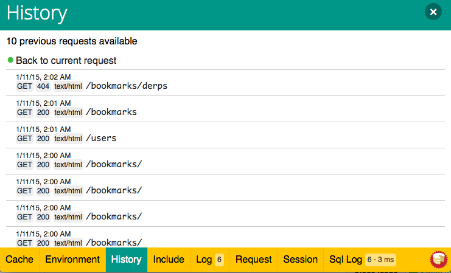
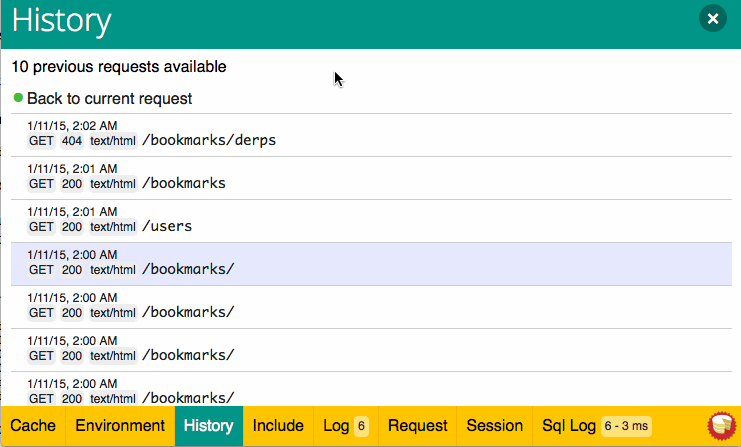
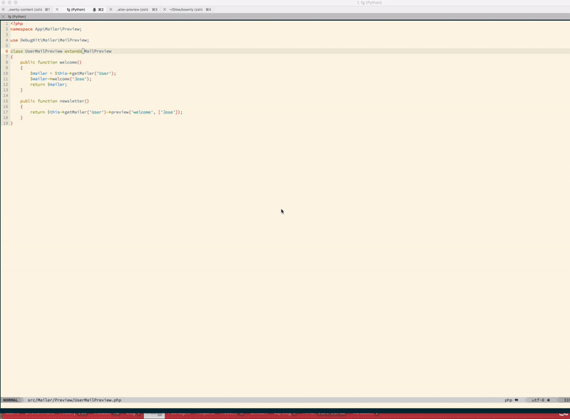

Debug Kit¶
DebugKit est un plugin supporté par la core team qui fournit une toolbar pour vous aider à debugger les applications CakePHP plus facilement.
Installation¶
Par défaut DebugKit est installé avec le squelette d’application. Si vous le retirez et voulez le réinstaller, vous pouvez le faire en lançant ce qui suit à partir du répertoire ROOT de votre application (où le fichier composer.json est localisé):
php composer.phar require --dev cakephp/debug_kit "~3.0"
Ensuite, vous devez activer le plugin en exécutant la ligne suivante:
bin/cake plugin load DebugKit
Stockage de DebugKit¶
Par défaut, DebugKit utilise une petite base de données SQLite dans le
répertoire /tmp de votre application pour stocker les données du panneau.
Si vous voulez que DebugKit stocke ses données ailleurs, vous pouvez définir
une connexion debug_kit.
Configuration de Base de Données¶
Par défaut DebugKit va stocker les données du panneau dans une base de données
SQLite dans le répertoire tmp de votre application. Si vous ne pouvez pas
installer pdo_sqlite, vous pouvez configurer DebugKit pour utiliser une base
de données différente en définissant une connexion debug_kit dans votre
fichier config/app.php.
Utilisation de la Toolbar¶
La Toolbar de DebugKit comprend plusieurs panneaux, qui apparaissent en cliquant sur l’icone CakePHP dans le coin en bas à droite de la fenêtre de votre navigateur. Une fois que la toolbar est ouverte, vous devriez voir une série de boutons. Chacun de ces boutons s’agrandit en un panneau avec des informations liées.
Chaque panneau vous permet d’inspecter plusieurs aspects de votre application:
- Cache Voir l’utilisation du cache pendant une requête et nettoyer les caches.
- Environment Affiche les variables d’environnement liées à PHP + CakePHP.
- History Affiche une liste des requêtes précédentes, et vous permet de charger et de voir les données de la toolbar des requêtes précédentes.
- Include Voir les fichiers inclus groupés par type.
- Log Affiche toute entrée faite dans les fichiers de log par cette requête.
- Packages Affiche la liste des dépendances avec leur version courante et vous permet de vérifier les packages qui ne sont pas à jour.
- Mail Affiche tous les emails envoyés pendant la requête et permet de prévisualiser les emails pendant le développement sans les envoyer.
- Request Affiche les informations sur la requête courante, GET, POST, les paramètre de Cake, sur la Route Courante et les Cookies.
- Session Affiche les informations actuellement dans la Session.
- Sql Logs Affiche les logs SQL pour chaque connexion à la base de données.
- Timer Affiche tout timers qui a été défini pendant la requête avec
DebugKit\DebugTimer, et l’utilisation de la mémoire collectée avecDebugKit\DebugMemory. - Variables Affiche les variables de View définies dans le controller.
Typiquement, un panneau gère la collection et affiche un type unique d’information comme les Logs ou les informations de la Requête. Vous pouvez choisir de voir les panneaux de la toolbar ou ajouter vos panneaux personnalisés.
Utiliser le Panneau d’Historique¶
Le panneau d’historique est l’une des fonctionnalités les plus souvent mal comprise de DebugKit. Elle est un moyen de voir les données de la toolbar des requêtes précédentes, d’inclure les erreurs et les redirects.

Comme vous pouvez le voir, le panneau contient une liste des requêtes. Sur la gauche, vous pouvez voir un point marquant la requête actuelle. Cliquer sur n’importe quelles données de requête va charger les données du panneau pour cette requête. Quand les données historiques sont chargées, les titres du panneau seront colorés pour indiquer que des données alternatives ont été chargées.

Utiliser le Panneau Mail¶
Le panneau de mail vous permet de pister tous les emails envoyés pendant une requête.

La prévisualisation de mail vous permet de facilement vérifier les emails pendant le développement.

Développer vos Propres Panneaux¶
Vous pouvez créer vos propres panneaux personnalisés pour DebugKit pour améliorer le debug de vos applications.
Créer une Classe Panel¶
Les Classes Panel doivent simplement être placées dans le répertoire
src/Panel. Le nom de fichier doit correspondre au nom de la classe, pour
que la classe MyCustomPanel s’attende à avoir un fichier au nom
src/Panel/MyCustomPanel.php:
namespace App\Panel;
use DebugKit\DebugPanel;
/**
* Mon panneau Personnalisé
*/
class MyCustomPanel extends DebugPanel
{
...
}
Remarquez que les panneaux personnalisés doivent étendre la classe
DebugPanel.
Callbacks¶
Par défaut, les objets Panel ont deux callbacks, leur permettant de s’insérer
dans la requête actuelle. Les panneaux s’inscrivent aux events
Controller.initialize et Controller.shutdown. Si votre panneau doit
s’inscrire à des events supplémentaires, vous pouvez utiliser la méthode
implementedEvents() pour définir tous les events auxquels votre panneau
doit s’intéresser.
Vous devez vous référer aux panneaux intégrés pour avoir quelques exemples sur la façon de construire des panneaux.
Elements de Panneau¶
Chaque panneau s’attend à avoir un element de view qui rend le contenu du
panneau. Le nom de l’element doit être avec une inflection en underscore du
nom de la classe.
Par exemple SessionPanel a un element nommé session_panel.ctp, et
SqllogPanel a un element nommé sqllog_panel.ctp. Ces elements doivent être
localisés à la racine de votre répertoire src/Template/Element.
Titres Personnalisés et Elements¶
Les panneaux doivent choisir leur titre et leur nom d’element par convention. Cependant, si vous avez besoin de choisir un nom ou un titre d’element personnalisé, vous pouvez définir des méthodes pour personnaliser le comportement de votre panneau:
title()- Configure le titre qui est affiché dans la toolbar.elementName()Configure l’element qui doit être utilisé pour un panneau donné.
Méthodes de Hook pour Panneaux¶
Vous pouvez également implémenter les méthodes suivantes pour personnaliser la manière dont votre panneau se comporte et s’affiche:
shutdown(Event $event)Cette méthode collecte et prépare les données pour panneau. Les données sont généralement stockées dans$this->_data.summary()Peut retourner une chaine de caractères contenu un résumé de données qui sera affiché dans la barre lorsque le panneau est replié. C’est souvent un compteur ou un court résumé.data()Retourne les données du panneau pour être utilisées dans un element. Cette méthode vous laisse manipuler les données collectées dans la méthodeshutdown(). cette méthode doit retourner des données sérializables.
Panneaux dans d’autres Plugins¶
Les panneaux fournis par les Plugins fonctionnent presque entièrement
de la même façon que les autres plugins, avec quelques différences mineures:
Vous devez définir public $plugin comme nom de répertoire de plugin, pour
que les elements du panneau puissent être localisés au moment de les afficher:
namespace MyPlugin\Panel;
use DebugKit\DebugPanel;
class MyCustomPanel extends DebugPanel
{
public $plugin = 'MyPlugin';
...
}
Pour utiliser un panneau de plugin ou de l’application, mettez à jour la configuration du DebugKit de votre application pour ajouter le panneau:
// dans config/bootstrap.php
Configure::write('DebugKit.panels', ['App', 'MyPlugin.MyCustom']);
Plugin::load('DebugKit', ['bootstrap' => true]);
Ce qui est au-dessus charge tous les panneaux par défaut ainsi que le panneau
AppPanel``et le panneau ``MyCustomPanel depuis MyPlugin.